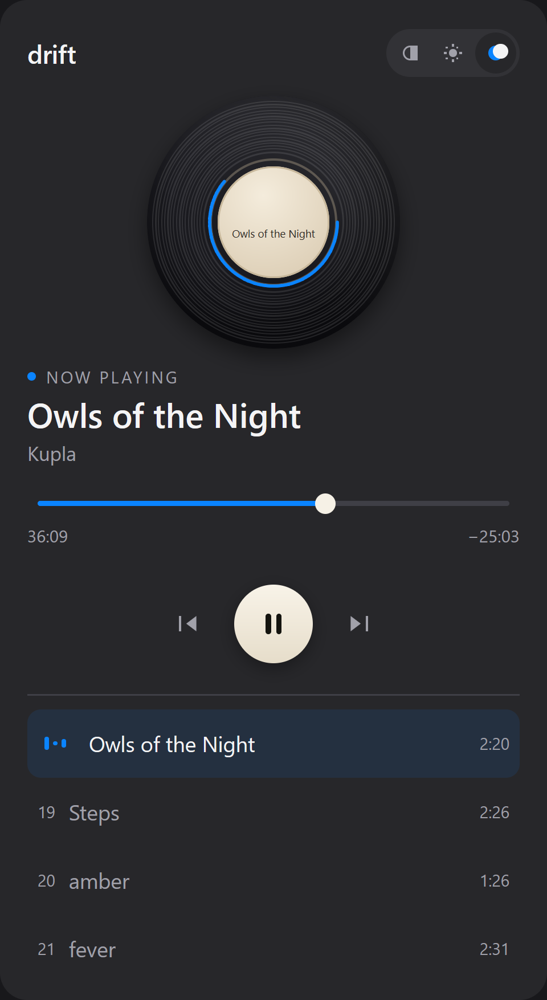
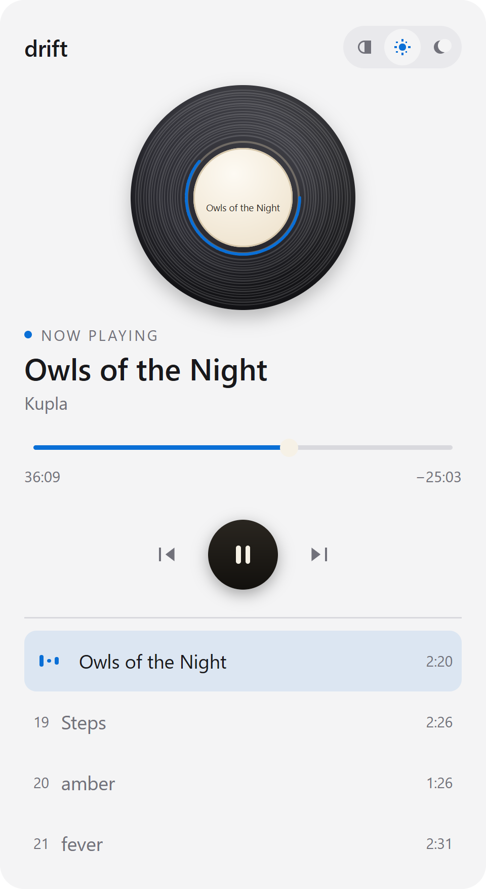

It plays what you already own
Point drift at one MP3, Ogg, Oga or WAV file. The mix is read from disk as it plays, so a long recording costs the same memory as a short one. The file never leaves the machine.
Windows 10 and 11
drift plays one long mix from your own disk and cuts it into 28 chapters, so the title always follows the music. No browser, no account, nothing to download but the app.
3.4 MB installer Free, MIT licence No account, no telemetry

The popup, 320 by 585 pixels, at the size Windows gives it
A player for one kind of listening: a long mix, already on your disk, that you leave running while you work.
Point drift at one MP3, Ogg, Oga or WAV file. The mix is read from disk as it plays, so a long recording costs the same memory as a short one. The file never leaves the machine.
Twenty eight chapter marks sit at the timestamps of your tracklist. As the mix crosses from one song to the next, the window changes name, artist and length without you touching anything.
Playback runs in the app, not in the popup. Close the panel and the window is gone while the song keeps going. Open it again and the record is still turning where you left it.
No Electron, no webview, no runtime bundle. drift draws its own interface with MyGo, so the record, the grooves and the progress ring are paint calls rather than images. The whole program is 10 MB.
The first run asks for your recording once. Later runs open it before you ask.
Run the installer. drift starts with no window at all. Click the record icon in the tray and the panel drops down.
Choose one audio file. The app takes a single recording, not a folder, and remembers the path for the next time.
The music carries on in the tray. Right click the icon for play, pause, next chapter, or quit.
The record stays vinyl in daylight. The accent is Apple system blue, in the variant each appearance needs to stay readable.

A painter draws the disc, eighteen grooves, the label and the progress ring every frame. No image is shipped for any of it.
The disc turns once every twelve seconds. The title on the label stays level, because a rotated title is unreadable in a still frame.
Dragging, a click on the track, the arrow keys and a screen reader all reach the same control. Only the look is custom.
Worth knowing before you install it.
There is no catalogue, no search and no streaming service behind it. You supply the recording.
The recording belongs to the artists in it. drift carries the tracklist, not the music.
M4A and MP4 files are refused with a message telling you to convert them. The decoder handles MP3, Ogg, Oga and WAV.
No account, no cloud, no library. Your mix stays on the machine you chose it on.
No. Nothing in the app fetches a mix, checks for a newer version or reports what you play. It runs the same on a machine that has never been online.
MP3, Ogg, Oga and WAV. It reads them as they play and seeks inside the file, so a long recording does not load into memory first.
The bundled decoder cannot read AAC. drift names the file and asks you to convert it to MP3 or Ogg rather than failing later as silence.
No. Audio lives in the app, not the window. The popup is only a view onto a player that keeps running while it is closed.
Yes. The path is saved when you open a file, and the app tries it at startup. If the file has moved or gone, drift opens with the empty state and asks you to choose again.
Only if your recording is the one the timestamps were checked against. The twenty eight offsets live in one file, so you can edit them to fit your own mix and rebuild.
Not yet. The framework targets all three, but only the Windows installer is built and tested. The tray behaviour differs on Linux, where the icon only offers a menu.
Nothing. The code is MIT licensed. The music is a separate matter, and it is not mine to license.
The installer is 3.4 MB and the program it puts in place is 10 MB. There is no runtime to install first, because the interface is drawn by the program itself.
One download, one mix file, and the rest of the afternoon.